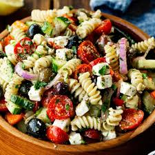

Pasta Recipe

Description of the Recipe
This classic pasta dish features a rich tomato-based sauce with a hint of garlic and herbs. The pasta is cooked
to perfection and tossed in the sauce, creating a satisfying meal that's both simple and flavorful.
Ingredients
- Spaghetti or your preferred pasta
- Tomato sauce (canned or homemade)
- Garlic (minced)
- Onions (chopped)
- Olive oil
- Basil leaves (fresh or dried)
- Parmesan cheese (optional)
- Salt and pepper to taste
Steps for making Pasta
- Cook the pasta according to package instructions.
- Heat olive oil in a pan over medium heat.
- Add minced garlic and chopped onions, sauté until fragrant.
- Pour in the tomato sauce and simmer for 10 minutes.
- Drain the cooked pasta and toss it with the sauce.
- Sprinkle with basil leaves and Parmesan cheese if desired.
Home